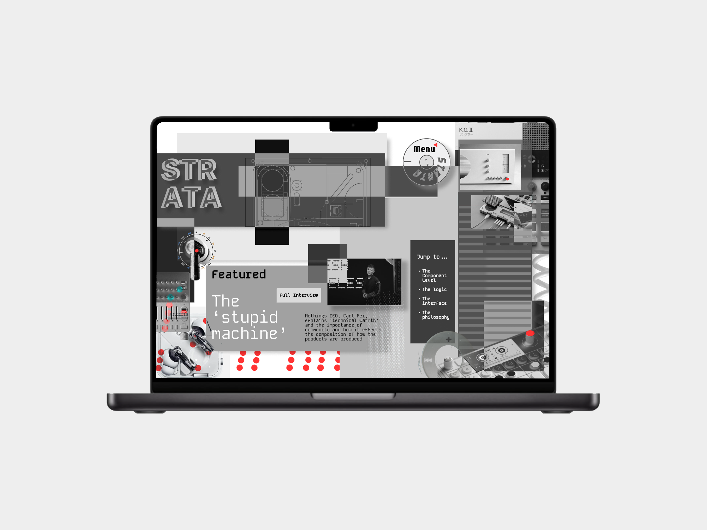

An exploration into heavy, aggressive typography structures. Built to push the boundaries of legibility using calculated line weight distortion and harsh geometric layouts designed for physical print mediums.

A user-centric digital application asset structure. Transitioning complex database interactions into a minimal mobile interface that utilizes absolute black screen elements to preserve power and lower eye strain.

Refining an organic legacy identity into a structural geometric framework. Optimized for absolute legibility across commercial vehicle wraps, high-visibility application assets, and corporate document architectures.

A modern editorial digital environment concept. Utilizing dynamic screen layouts, stark typographic hierarchies, and interactive viewport components to showcase luxury architecture and interior systems.

A raw packaging layout strategy. Bringing subverted streetwear graphic styling into a standard consumer space to create a striking, immediate contrast on retail inventory shelving structures.

A conceptual packaging evolution assignment. Stripping away decorative ornament components to highlight product geometry, resulting in an elegant and timeless sustainable footprint solution.